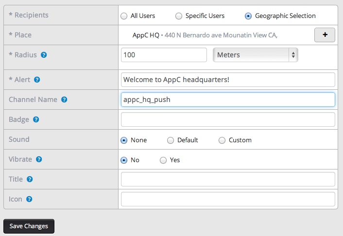
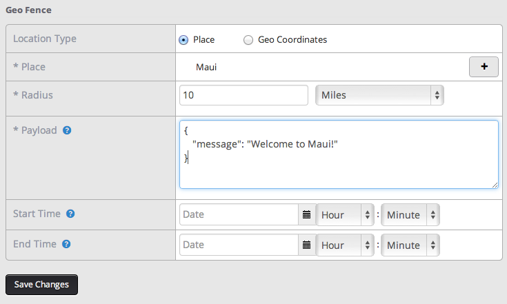
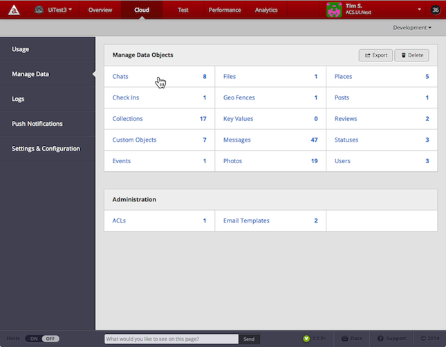
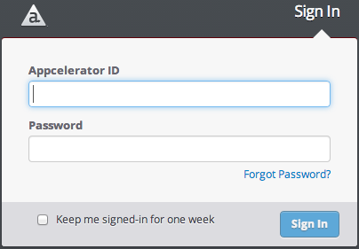
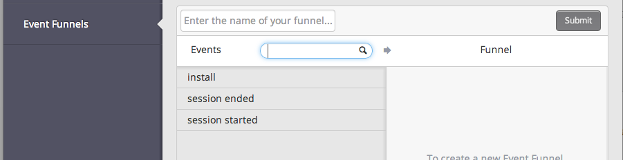
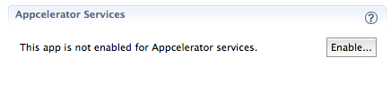

Appcelerator Platform Release 1.1.0
This release of Appcelerator Platform version 1.1.0 include updates to Appcelerator Dashboard, the Titanium SDK, ACS, Node.ACS, and Test. The following table lists the versions of all Platform components in this release.
|
Component |
Version |
Notes |
|
Dashboard |
1.1.0 |
|
|
Appcelerator Studio |
3.2.1 |
No update |
|
Titanium SDK |
3.2.2 |
|
|
Alloy |
1.3.1 |
No update |
|
ACS |
Sprint 1/2/3 2014 |
|
|
Node.ACS |
1.0.14 |
|
|
Analytics |
3.2.2 |
No Update |
|
Test module |
6937.119 |
|
|
Performance |
1.0.8 |
No Update |
|
Documentation |
N/A |
Dashboard 1.1.0 release notes
This release of Dashboard includes the following update and new features.
Sending geo-based push notifications
The Push Notifications screen ( Cloud > Push Notifications) now lets you specify a geographic location push notifications. Any devices located within the specified Radiusof the location will be receive the notification. To use this feature, the mobile application must periodically ask the device for its current location using the Geolocation API, update notify ACS of its current location with the PushNotifications update method.

Manage GeoFence objects
You can now manage your application's Geo Fence objects in Dashboard ( Cloud > Manage Data > Geo Fences). A Geo Fence associates a JSON payload with a location and a radius. Applications use the GeoFences API to query the ACS server for any geofences that intersect the device's location.

Updates to Manage Data UI workflows
The forms for managing ACS objects (Cloud > Manage Data) have been updated with improved UIs and workflows. Also, the ACLs and Email Templates management features have moved to the Manage Data screen from the main Cloud screen.

Login and session timeout changes
The Dashboard login screen now has an option to keep you signed-in for one week. If you do not select this option, your session will expire and you will be logged out after 30 minutes of inactivity.

Session events in Event Funnels UI
The Event Funnels screen ( Analytics > Event Funnels) now includes session events that you can use in your event funnels. For example, with this features you can create an even funnel displays all application installations that occurred in specific time frame.
-
Install– User installed the application.
-
Session started– User opened the application.
-
Session ended– User stopped the application or sent it to the background.

Other changes and bug fixes
-
When creating a Geo Fence, you can now choose Milesor Metersas the unit for the Radius (APPTS-3803)
-
Fixed issue with inconsistent counts in Analytics installs for custom date range (APPTS-3905).
-
Fixed issue with custom date filter value being set to 0 when reapplying the same filter (APPTS-3891).
Node.ACS
This Platform release includes Node.ACS version 1.0.14. See the Node.ACS release notes for details.
Appcelerator Cloud Services (ACS)
This release updates ACS to version Sprint 1/2/3 2014. See the Node.ACS release notes for details.
Test
The Test module has been updated to version 6937.119. Once the new module is installed, Appcelerator Services will be disabled in in any applications that use it. You will need to re-enable Services in those applications.
To install the new Test module and re-enable Appcelerator Services:
-
In Studio select Help > Check for Appcelerator Updates(or re-launch Studio and wait for an update notification to appear).
-
Click Installin the Appcelerator Updates dialog that appears.
-
In the tiapp.xml file of each project that is using Test, click Enablein the Appcelerator Services section.

Documentation
The Platform documentation has following updates in this release:
-
A QR code for opening the TouchTest Agent URL has been added to the Test documentation.